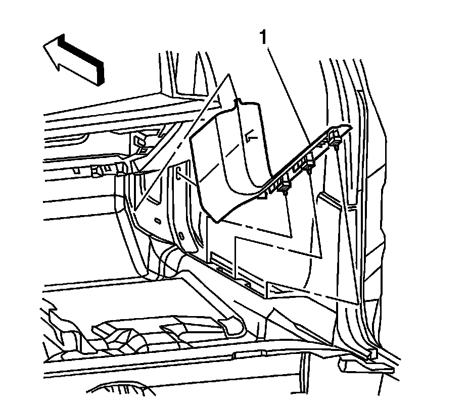

Front Carpet Retainer Replacement
Front Carpet Retainer Replacement
Tools Required
J 38778 Door Trim Pad Clip Remover
Removal Procedure

1. Using a J 38778 release the retainer clips from the rocker panel.
2. Slide the carpet retainer (1) rearward.
3. Remove the front carpet retainer.
Installation Procedure
1. Position the front upper retainer to the holes in the hinge pillar.
2. Align the front carpet retainer (1) with the slots in the rocker panel.
3. Apply pressure along the entire length of the molding in order to secure the retainers.